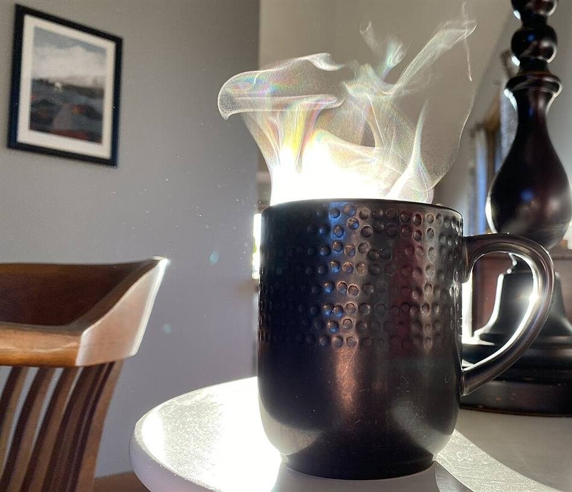

ひと息つける時間
島の景色を思い浮かべながら、窓辺でゆっくりお茶を飲む時間が過ごせそうな喫茶室です。急がず、気持ちが静かになるような場所を想像します。
以下は、喫茶店という業種から制作側が想像して書いた例文です。実在のお客様の投稿ではありません。
島の景色を思い浮かべながら、窓辺でゆっくりお茶を飲む時間が過ごせそうな喫茶室です。急がず、気持ちが静かになるような場所を想像します。
丁寧に淹れた一杯を前に、本を読んだり、ぼんやり海を思ったりできそうです。ひとりでも入りやすい雰囲気だと想像します。
島をめぐる途中に、ふらりと立ち寄って休める場所として思い浮かびます。帰りにまた寄りたくなる、そんな店だと想像します。
